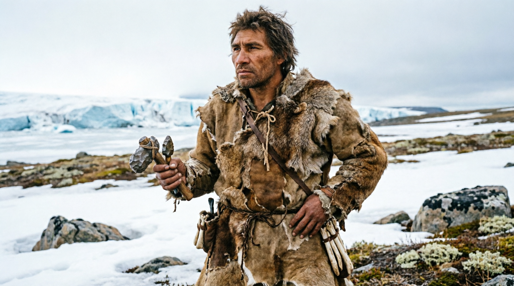
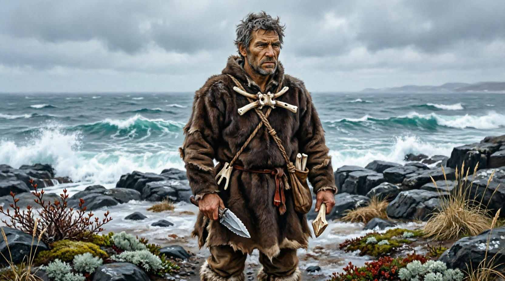

people_ullam.png
Уллам
Единственная культура на континенте. Пришли с юга через юго-восточный перешеек — откуда именно и почему неизвестно, это останется загадкой в лоре. Европейский тип внешности. Вопрос «есть ли у тебя уллам?» — первый и главный критерий человека. Дикари для них не уллам.
Население
~3 000
Тип
Generic
Происхождение
неизвестно
Территория
юг, 140 кл.
Язык Уллам (Прото-Уллам)
Язык Уллам — реконструкция лингвистов 1952 года. Как праиндоевропейский для нас. Никто живой на нём не говорит. Неточности и лакуны допустимы.
| Категория | Звуки / описание |
|---|---|
| Краткие гласные | а е и у |
| Долгие гласные | аа ее ии уу |
| Отсутствует | о — появится позже как рефлекс Х₃ |
| Ларингалы | Х₁ нейтральный · Х₂ велярный · Х₃ лабиовелярный |
| Обычные согласные | м н л р к т п с в й |
| Ретрофлексные | тт нн лл — архаичная черта |
| Структура слога | CV · CVV · CVC — без скоплений |
| Порядок слов | SOV |
Судьба ларингалов в языках-потомках
| Ветвь | Х₁ | Х₂ | Х₃ | Результат |
|---|---|---|---|---|
| Северная | исчезает | исчезает | исчезает | гармония гласных |
| Западная | удлиняет | даёт а | даёт о | дифтонги, аспирация |
| Степная | исчезает | даёт о | исчезает | суффиксальная агглютинация |
| Центральная | исчезает | даёт а | лабиализация | падежи, род |
Краткий словарь (реконструкция 1952)
*уламчеловек, свой
*аллаземля, почва
*аттаотец, старший
*аммамать, старшая
*тииогонь
*каанвода, река
*аннанебо
*мирзверь, дичь
*калакамень, орудие
*таладерево, лес
*сулапуть, движение
*нулахолод, лёд
*вирасила, жизнь
*палиместо стоянки
*раниженщина
*каниребёнок
*тумасмерть
*саансолнце
*миинрыба
*куургора
*еелптица
Береговые Уллам

people_beregovye.png
Береговые Уллам
Откол от ядра Уллам ок. −80 000. Группа двинулась на запад вдоль южного побережья. Первые кто увидел открытое море. Ещё считают себя Уллам — самоназвание появится позже. Первое слово вне Корня: *аала — море.
Население
~800
Тип
Naval
Происхождение
Уллам
Территория
зап. берег
Язык — дрейф от Корня
База — Прото-Уллам. Изменения начались но незначительны. Главное новшество — морская лексика которой нет у ядра.
Новые слова
*ааламоре
*миилволна
*каареберег, бухта
*тулаплот, лодка
*санниприбой
*вираанприлив
*налуглубина, дно
*пееламорская птица
*тиисантуман
*каарунскала у воды
Фоновое население
Дикари (Wildlands)
Неандертальцы и денисовцы. Рассеяны по всему континенту, ~200 изолированных групп. Каждая группа — своя сигнальная система, не язык. Механически неуправляемы в Azgaar. Будут уничтожены или ассимилированы потомками Уллам.